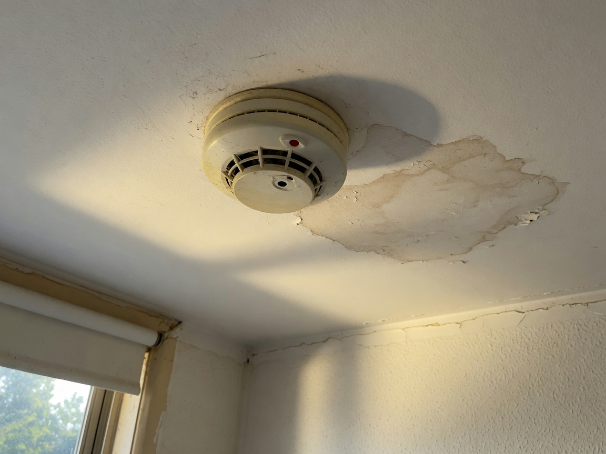

One-handed. Autosave after each answer. Uploads never block section changes. Submit blocks only if required evidence is missing or permanently failed.
Bedroom 1 · 4 of 12
Offline
Smoke alarm
1
Evidence required

FAIL
Tenant signature
Sign here
Callouts
- Fail + photo is the demo beat. Annotation is a layer, not a separate app.
- Status words match the clip and waitlist. Never “IndexedDB write ok”.
- Gate: close tab, reopen, add evidence, reconnect, retry interrupt → one inspection.